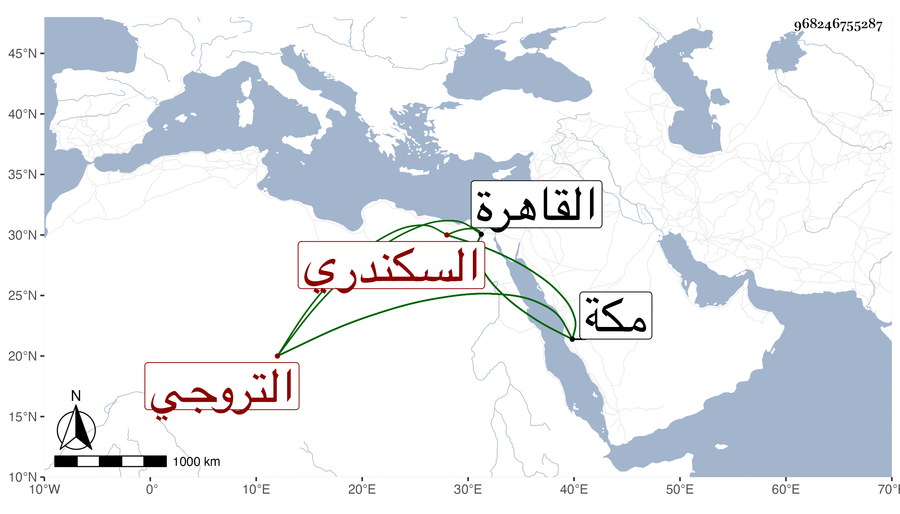

0902Sakhawi.DawLamic.ITO20230111-ara1.EIS1600.968246755287
Biography ID: 968246755287
527
محمد بن علي بن عواض السكندري التروجي نزيل القاهرة ثم مكة ويعرف بابن أخت ابن عواض وأكثر ما يقال ابن عواض ، ورأيت من سماه محمد بن أحمد ابن علي . أحد من كان عند ابن الفقيه موسى وابني عليبة وتمول من التجارة وغيرها وعرف بالنهضة والجسارة ورزق حظا ، وابتنى دارا بالقرب من سوق أمير الجيوش وأقام بمكة مدة وصودر بعد موت الجماعة لاتهامه بمال لابن موسى ثم طلب في سنة أربع وتسعين فعملت مصلحته بثلاثة آلاف دينار فأكثر ، ورجع في أثناء سنة خمس وتسعين في البحر وأردف بجميع عياله مع الموسم وهو ممن يحب الصالحين سيما ابن الغمري وله سبع بجامعه ، وسمع مني بمكة في سنة ست وثمانين . مات في ليلة خامس عشري ربيع الأول سنة سبع وتسعين بمكة وصلي عليه ضحى الغد في مشهد حافل ودفن بتربة بني عليبة وقد زاد على الستين . وكان فيه خير وبر وانتماء لأبي العباس بن الغمري رحمه الله وعوضه الجنة .
